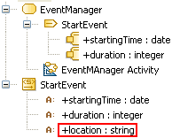

InputPins of the SendSignalAction do not match the Signal’s Attributes.
UML constraint:
Example:

The “StartEvent” SendSignalAction is invalid, because the “location” Attribute of the “StartEvent” Signal it is calling is not matched to one of its InputPins.
When you get an R1380 error, verify the following: